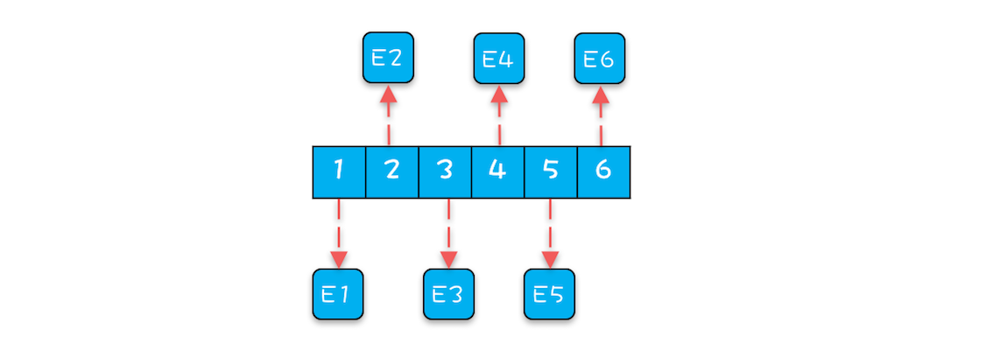
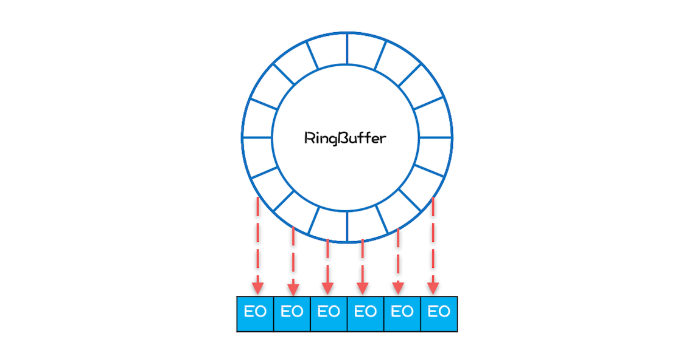
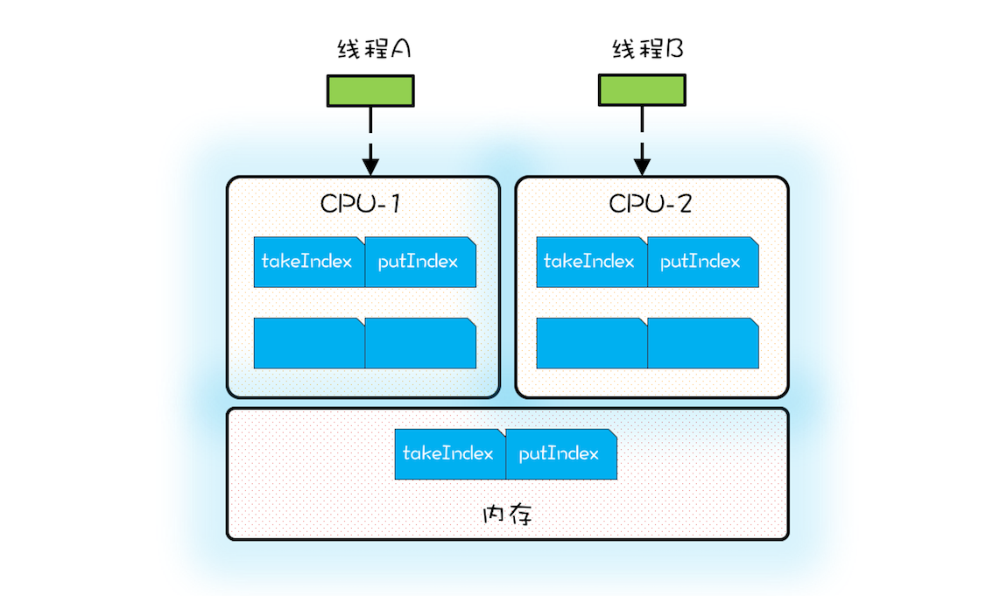
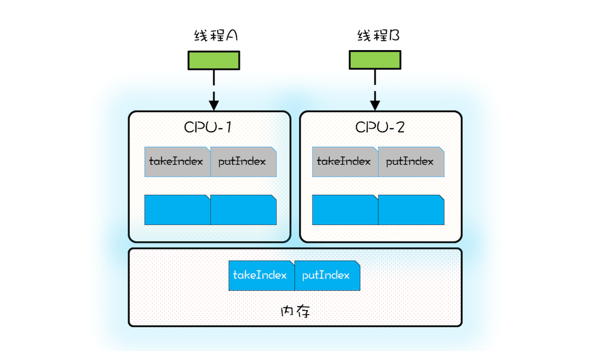

- 00 学习攻略 如何才能学好并发编程？.md
- 00 开篇词 你为什么需要学习并发编程？.md
- 01 可见性、原子性和有序性问题：并发编程Bug的源头.md
- 02 Java内存模型：看Java如何解决可见性和有序性问题.md
- 03 互斥锁（上）：解决原子性问题.md
- 04 互斥锁（下）：如何用一把锁保护多个资源？.md
- 05 一不小心就死锁了，怎么办？.md
- 06 用“等待-通知”机制优化循环等待.md
- 07 安全性、活跃性以及性能问题.md
- 08 管程：并发编程的万能钥匙.md
- 09 Java线程（上）：Java线程的生命周期.md
- 10 Java线程（中）：创建多少线程才是合适的？.md
- 11 Java线程（下）：为什么局部变量是线程安全的？.md
- 12 如何用面向对象思想写好并发程序？.md
- 13 理论基础模块热点问题答疑.md
- 14 Lock和Condition（上）：隐藏在并发包中的管程.md
- 15 Lock和Condition（下）：Dubbo如何用管程实现异步转同步？.md
- 16 Semaphore：如何快速实现一个限流器？.md
- 17 ReadWriteLock：如何快速实现一个完备的缓存？.md
- 18 StampedLock：有没有比读写锁更快的锁？.md
- 19 CountDownLatch和CyclicBarrier：如何让多线程步调一致？.md
- 20 并发容器：都有哪些“坑”需要我们填？.md
- 21 原子类：无锁工具类的典范.md
- 22 Executor与线程池：如何创建正确的线程池？.md
- 23 Future：如何用多线程实现最优的“烧水泡茶”程序？.md
- 24 CompletableFuture：异步编程没那么难.md
- 25 CompletionService：如何批量执行异步任务？.md
- 26 Fork_Join：单机版的MapReduce.md
- 27 并发工具类模块热点问题答疑.md
- 28 Immutability模式：如何利用不变性解决并发问题？.md
- 29 Copy-on-Write模式：不是延时策略的COW.md
- 3 个用户来信 打开一个新的并发世界.md
- 30 线程本地存储模式：没有共享，就没有伤害.md
- 31 Guarded Suspension模式：等待唤醒机制的规范实现.md
- 32 Balking模式：再谈线程安全的单例模式.md
- 33 Thread-Per-Message模式：最简单实用的分工方法.md
- 34 Worker Thread模式：如何避免重复创建线程？.md
- 35 两阶段终止模式：如何优雅地终止线程？.md
- 36 生产者-消费者模式：用流水线思想提高效率.md
- 37 设计模式模块热点问题答疑.md
- 38 案例分析（一）：高性能限流器Guava RateLimiter.md
- 39 案例分析（二）：高性能网络应用框架Netty.md
- 40 案例分析（三）：高性能队列Disruptor.md
- 41 案例分析（四）：高性能数据库连接池HiKariCP.md
- 42 Actor模型：面向对象原生的并发模型.md
- 43 软件事务内存：借鉴数据库的并发经验.md
- 44 协程：更轻量级的线程.md
- 45 CSP模型：Golang的主力队员.md
- 用户来信 真好，面试考到这些并发编程，我都答对了！.md
- 结束语 十年之后，初心依旧.md
40 案例分析（三）：高性能队列Disruptor
我们在《20 | 并发容器：都有哪些“坑”需要我们填？》介绍过Java SDK提供了2个有界队列：ArrayBlockingQueue 和 LinkedBlockingQueue，它们都是基于ReentrantLock实现的，在高并发场景下，锁的效率并不高，那有没有更好的替代品呢？有，今天我们就介绍一种性能更高的有界队列：Disruptor。
Disruptor是一款高性能的有界内存队列，目前应用非常广泛，Log4j2、Spring Messaging、HBase、Storm都用到了Disruptor，那Disruptor的性能为什么这么高呢？Disruptor项目团队曾经写过一篇论文，详细解释了其原因，可以总结为如下：
- 内存分配更加合理，使用RingBuffer数据结构，数组元素在初始化时一次性全部创建，提升缓存命中率；对象循环利用，避免频繁GC。
- 能够避免伪共享，提升缓存利用率。
- 采用无锁算法，避免频繁加锁、解锁的性能消耗。
- 支持批量消费，消费者可以无锁方式消费多个消息。
其中，前三点涉及到的知识比较多，所以今天咱们重点讲解前三点，不过在详细介绍这些知识之前，我们先来聊聊Disruptor如何使用，好让你先对Disruptor有个感官的认识。
下面的代码出自官方示例，我略做了一些修改，相较而言，Disruptor的使用比Java SDK提供BlockingQueue要复杂一些，但是总体思路还是一致的，其大致情况如下：
在Disruptor中，生产者生产的对象（也就是消费者消费的对象）称为Event，使用Disruptor必须自定义Event，例如示例代码的自定义Event是LongEvent；
构建Disruptor对象除了要指定队列大小外，还需要传入一个EventFactory，示例代码中传入的是
LongEvent::new；消费Disruptor中的Event需要通过handleEventsWith()方法注册一个事件处理器，发布Event则需要通过publishEvent()方法。
//自定义Event class LongEvent { private long value; public void set(long value) {
this.value = value;} } //指定RingBuffer大小, //必须是2的N次方 int bufferSize = 1024;
//构建Disruptor Disruptor
disruptor = new Disruptor<>( LongEvent::new, bufferSize, DaemonThreadFactory.INSTANCE);//注册事件处理器 disruptor.handleEventsWith( (event, sequence, endOfBatch) ->
System.out.println("E: "+event));//启动Disruptor disruptor.start();
//获取RingBuffer RingBuffer
ringBuffer = disruptor.getRingBuffer(); //生产Event ByteBuffer bb = ByteBuffer.allocate(8); for (long l = 0; true; l++){ bb.putLong(0, l); //生产者生产消息 ringBuffer.publishEvent( (event, sequence, buffer) -> event.set(buffer.getLong(0)), bb);Thread.sleep(1000); }
RingBuffer如何提升性能
Java SDK中ArrayBlockingQueue使用数组作为底层的数据存储，而Disruptor是使用RingBuffer作为数据存储。RingBuffer本质上也是数组，所以仅仅将数据存储从数组换成RingBuffer并不能提升性能，但是Disruptor在RingBuffer的基础上还做了很多优化，其中一项优化就是和内存分配有关的。
在介绍这项优化之前，你需要先了解一下程序的局部性原理。简单来讲，程序的局部性原理指的是在一段时间内程序的执行会限定在一个局部范围内。这里的“局部性”可以从两个方面来理解，一个是时间局部性，另一个是空间局部性。时间局部性指的是程序中的某条指令一旦被执行，不久之后这条指令很可能再次被执行；如果某条数据被访问，不久之后这条数据很可能再次被访问。而空间局部性是指某块内存一旦被访问，不久之后这块内存附近的内存也很可能被访问。
CPU的缓存就利用了程序的局部性原理：CPU从内存中加载数据X时，会将数据X缓存在高速缓存Cache中，实际上CPU缓存X的同时，还缓存了X周围的数据，因为根据程序具备局部性原理，X周围的数据也很有可能被访问。从另外一个角度来看，如果程序能够很好地体现出局部性原理，也就能更好地利用CPU的缓存，从而提升程序的性能。Disruptor在设计RingBuffer的时候就充分考虑了这个问题，下面我们就对比着ArrayBlockingQueue来分析一下。
首先是ArrayBlockingQueue。生产者线程向ArrayBlockingQueue增加一个元素，每次增加元素E之前，都需要创建一个对象E，如下图所示，ArrayBlockingQueue内部有6个元素，这6个元素都是由生产者线程创建的，由于创建这些元素的时间基本上是离散的，所以这些元素的内存地址大概率也不是连续的。

ArrayBlockingQueue内部结构图
下面我们再看看Disruptor是如何处理的。Disruptor内部的RingBuffer也是用数组实现的，但是这个数组中的所有元素在初始化时是一次性全部创建的，所以这些元素的内存地址大概率是连续的，相关的代码如下所示。
for (int i=0; i<bufferSize; i++){
//entries[]就是RingBuffer内部的数组
//eventFactory就是前面示例代码中传入的LongEvent::new
entries[BUFFER_PAD + i]
= eventFactory.newInstance();
}
Disruptor内部RingBuffer的结构可以简化成下图，那问题来了，数组中所有元素内存地址连续能提升性能吗？能！为什么呢？因为消费者线程在消费的时候，是遵循空间局部性原理的，消费完第1个元素，很快就会消费第2个元素；当消费第1个元素E1的时候，CPU会把内存中E1后面的数据也加载进Cache，如果E1和E2在内存中的地址是连续的，那么E2也就会被加载进Cache中，然后当消费第2个元素的时候，由于E2已经在Cache中了，所以就不需要从内存中加载了，这样就能大大提升性能。

Disruptor内部RingBuffer结构图
除此之外，在Disruptor中，生产者线程通过publishEvent()发布Event的时候，并不是创建一个新的Event，而是通过event.set()方法修改Event， 也就是说RingBuffer创建的Event是可以循环利用的，这样还能避免频繁创建、删除Event导致的频繁GC问题。
如何避免“伪共享”
高效利用Cache，能够大大提升性能，所以要努力构建能够高效利用Cache的内存结构。而从另外一个角度看，努力避免不能高效利用Cache的内存结构也同样重要。
有一种叫做“伪共享（False sharing）”的内存布局就会使Cache失效，那什么是“伪共享”呢？
伪共享和CPU内部的Cache有关，Cache内部是按照缓存行（Cache Line）管理的，缓存行的大小通常是64个字节；CPU从内存中加载数据X，会同时加载X后面（64-size(X)）个字节的数据。下面的示例代码出自Java SDK的ArrayBlockingQueue，其内部维护了4个成员变量，分别是队列数组items、出队索引takeIndex、入队索引putIndex以及队列中的元素总数count。
/** 队列数组 */
final Object[] items;
/** 出队索引 */
int takeIndex;
/** 入队索引 */
int putIndex;
/** 队列中元素总数 */
int count;
当CPU从内存中加载takeIndex的时候，会同时将putIndex以及count都加载进Cache。下图是某个时刻CPU中Cache的状况，为了简化，缓存行中我们仅列出了takeIndex和putIndex。

CPU缓存示意图
假设线程A运行在CPU-1上，执行入队操作，入队操作会修改putIndex，而修改putIndex会导致其所在的所有核上的缓存行均失效；此时假设运行在CPU-2上的线程执行出队操作，出队操作需要读取takeIndex，由于takeIndex所在的缓存行已经失效，所以CPU-2必须从内存中重新读取。入队操作本不会修改takeIndex，但是由于takeIndex和putIndex共享的是一个缓存行，就导致出队操作不能很好地利用Cache，这其实就是伪共享。简单来讲，伪共享指的是由于共享缓存行导致缓存无效的场景。
ArrayBlockingQueue的入队和出队操作是用锁来保证互斥的，所以入队和出队不会同时发生。如果允许入队和出队同时发生，那就会导致线程A和线程B争用同一个缓存行，这样也会导致性能问题。所以为了更好地利用缓存，我们必须避免伪共享，那如何避免呢？

CPU缓存失效示意图
方案很简单，每个变量独占一个缓存行、不共享缓存行就可以了，具体技术是缓存行填充。比如想让takeIndex独占一个缓存行，可以在takeIndex的前后各填充56个字节，这样就一定能保证takeIndex独占一个缓存行。下面的示例代码出自Disruptor，Sequence 对象中的value属性就能避免伪共享，因为这个属性前后都填充了56个字节。Disruptor中很多对象，例如RingBuffer、RingBuffer内部的数组都用到了这种填充技术来避免伪共享。
//前：填充56字节
class LhsPadding{
long p1, p2, p3, p4, p5, p6, p7;
}
class Value extends LhsPadding{
volatile long value;
}
//后：填充56字节
class RhsPadding extends Value{
long p9, p10, p11, p12, p13, p14, p15;
}
class Sequence extends RhsPadding{
//省略实现
}
Disruptor中的无锁算法
ArrayBlockingQueue是利用管程实现的，中规中矩，生产、消费操作都需要加锁，实现起来简单，但是性能并不十分理想。Disruptor采用的是无锁算法，很复杂，但是核心无非是生产和消费两个操作。Disruptor中最复杂的是入队操作，所以我们重点来看看入队操作是如何实现的。
对于入队操作，最关键的要求是不能覆盖没有消费的元素；对于出队操作，最关键的要求是不能读取没有写入的元素，所以Disruptor中也一定会维护类似出队索引和入队索引这样两个关键变量。Disruptor中的RingBuffer维护了入队索引，但是并没有维护出队索引，这是因为在Disruptor中多个消费者可以同时消费，每个消费者都会有一个出队索引，所以RingBuffer的出队索引是所有消费者里面最小的那一个。
下面是Disruptor生产者入队操作的核心代码，看上去很复杂，其实逻辑很简单：如果没有足够的空余位置，就出让CPU使用权，然后重新计算；反之则用CAS设置入队索引。
//生产者获取n个写入位置
do {
//cursor类似于入队索引，指的是上次生产到这里
current = cursor.get();
//目标是在生产n个
next = current + n;
//减掉一个循环
long wrapPoint = next - bufferSize;
//获取上一次的最小消费位置
long cachedGatingSequence = gatingSequenceCache.get();
//没有足够的空余位置
if (wrapPoint>cachedGatingSequence || cachedGatingSequence>current){
//重新计算所有消费者里面的最小值位置
long gatingSequence = Util.getMinimumSequence(
gatingSequences, current);
//仍然没有足够的空余位置，出让CPU使用权，重新执行下一循环
if (wrapPoint > gatingSequence){
LockSupport.parkNanos(1);
continue;
}
//从新设置上一次的最小消费位置
gatingSequenceCache.set(gatingSequence);
} else if (cursor.compareAndSet(current, next)){
//获取写入位置成功，跳出循环
break;
}
} while (true);
总结
Disruptor在优化并发性能方面可谓是做到了极致，优化的思路大体是两个方面，一个是利用无锁算法避免锁的争用，另外一个则是将硬件（CPU）的性能发挥到极致。尤其是后者，在Java领域基本上属于经典之作了。
发挥硬件的能力一般是C这种面向硬件的语言常干的事儿，C语言领域经常通过调整内存布局优化内存占用，而Java领域则用的很少，原因在于Java可以智能地优化内存布局，内存布局对Java程序员的透明的。这种智能的优化大部分场景是很友好的，但是如果你想通过填充方式避免伪共享就必须绕过这种优化，关于这方面Disruptor提供了经典的实现，你可以参考。
由于伪共享问题如此重要，所以Java也开始重视它了，比如Java 8中，提供了避免伪共享的注解：@sun.misc.Contended，通过这个注解就能轻松避免伪共享（需要设置JVM参数-XX:-RestrictContended）。不过避免伪共享是以牺牲内存为代价的，所以具体使用的时候还是需要仔细斟酌。
欢迎在留言区与我分享你的想法，也欢迎你在留言区记录你的思考过程。感谢阅读，如果你觉得这篇文章对你有帮助的话，也欢迎把它分享给更多的朋友。
© 2019 - 2023 Liangliang Lee. Powered by gin and hexo-theme-book.